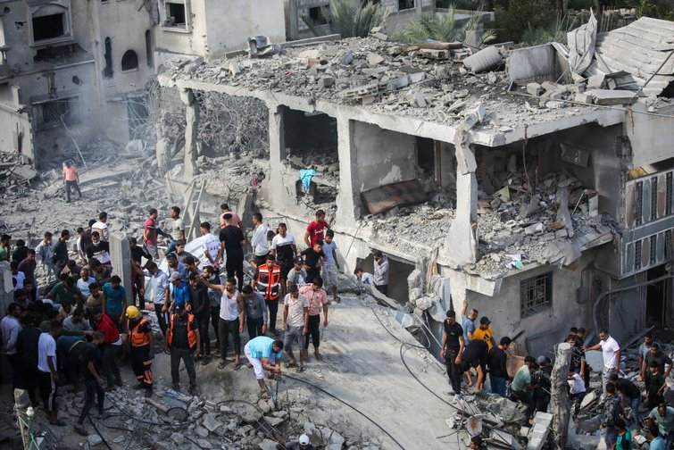

What Is Palestine?
The word Palestine derives from ancient Greek (Philistia), but ancient Egyptian, Assyrian and Hebrew languages also included similar-sounding words to describe the region or its people. Judaism, Christianity and Islam are all strongly tied to the region, and trace origins to the land over the past few thousand years.
Following the 1918 fall of the Ottoman Empire during World War I, Palestine typically referred to the region between the Mediterranean Sea and the Jordan River. Much of this land is now part of present-day Israel.

The Partition of Palestine :
In 1947, after more than two decades of British rule, the United Nations proposed a plan to partition Palestine into two sections: an independent Jewish state and an independent Arab state. The city of Jerusalem, which was claimed as a capital by both Jews and Palestinian Arabs, was to be an international territory with a special status.
Most Jewish leaders accepted the plan, but many Palestinian Arabs—some of whom had been actively fighting British and Jewish interests in the region since the 1920s—vehemently opposed it.
Hamas :
IIn 2006, Hamas, a Sunni Islamist militant group, won the Palestinian legislative elections.
That same year, fighting between Hamas and Fatah, the political group that controlled the PLO, ensued. In 2007, Hamas defeated Fatah in a battle for Gaza.
Hamas has perpetrated terrorist tactics, including carrying out suicide bombings, conducting deadly raids on military and civilian targets and repeatedly calling for the destruction of Israel.
Hamas and Israel have fought each other in several bloody conflicts, including in 2008, 2012 and 2014.

Current State of Palestine :
Although Palestinians occupy key areas of land, in the West Bank and the Gaza Strip,
some Israelis, with their government's blessing, continue to settle in areas that are generally agreed to be under Palestinian control. Many international rights groups consider such settlements illegal, and multiple UN resolutions have been passed backing that position. Borders aren’t clearly defined, and persistent conflict continues to be the norm. A substantial proportion of Israelis also oppose the settlements and would prefer to find peaceful ways to resolve their land disputes with the Palestinians.